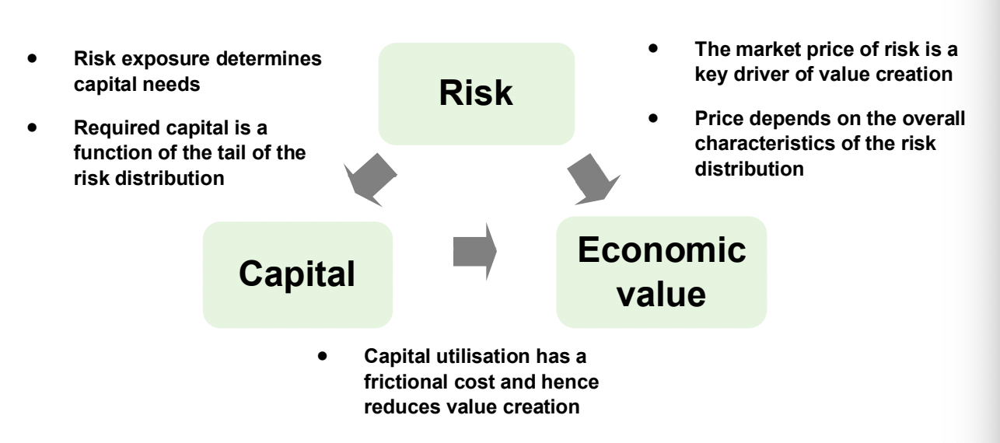

Capital management
Capital management involves considering both the capital required to support a business and the capital available to meet that requirement. The answer will depend on the risks the insurer faces, its plans for the future, and the perspective from which capital strength is viewed.
On this page
The Solvency II examples build on chapters 9–10. UK requirements have diverged under Solvency UK; the economic principles discussed here apply more broadly.
Capital requirements
In assessing the capital position of a company, it is necessary to consider the perspective from which capital strength should be viewed. This will normally be from the perspective of the policyholders, regulator, or shareholders.
Typically, policyholders and regulators are most interested in the company’s ability to meet their obligations under extreme adverse circumstances. Shareholders, however, may also be concerned about whether the company has sufficient capital to achieve a particular credit rating and/or to continue writing business going forwards.
The most onerous perspective will vary from company to company. For some companies, shareholders will require more capital than the regulator. For others, the opposite may be true. Which perspective is most onerous will depend on the nature of the business in force, the company's risk appetite, and their plans for the future.
When thinking about capital, it is necessary to distinguish between the following:
The capital required to support the business (i.e. the required capital).
The capital available to meet this requirement (i.e. the available capital).
In the context of insurance, available capital is defined as the difference between the value of assets and liabilities. However, this definition still requires the definition of asset and liability values to be clarified. Associated capital requirements (e.g. the Solvency Capital Requirement (SCR)) would not normally be included in the value of liabilities for this purpose but, instead, would be regarded as the capital which the available capital needs to cover.
Depending on the type of company, the available capital may be interpreted in different ways:
For a proprietary insurance company, the available capital is a measure of the shareholders' capital currently invested in the company.
The interpretation of available capital is less clear for with-profits funds, since excess assets cannot normally be used to support business outside of the fund.
Within a mutual insurance company, whilst the entire company theoretically belongs to its policyholders, the available capital is more likely to be regarded as the capital required to support the corporate entity. The available capital is therefore not earmarked for distribution to the current generation of policyholders.
Required capital represents the level of assets required in excess of liabilities so that policyholder claims (or shareholder requirements) can be met with a high degree of certainty when they fall due.
There are various types of required capital assessments.
Three common types include the following:
Economic capital: An internal determination of the capital required based on a company's risk profile, risk appetite, and the needs of its ongoing business strategy.
Regulatory capital: Solvency requirements prescribed by regulators, which define the regulatory value of a company's assets, liabilities, and the associated capital requirements.
Rating agency capital: This represents the view of rating agencies, whose capital adequacy standards are important for companies who wish to achieve or maintain a particular credit rating.
All three of these approaches to assessing capital consider policyholder protection to some extent, since there is a link between an insurer's ability to meet policyholder claims as they fall due and the broader risk appetite of the company.
The main reasons for a life insurance company requiring capital can be split into the following two broad categories:
Risk capital: The capital required to cover the day-to-day risks to which a company is exposed.
Such risks include the following:
Market risk.
Credit risk.
Insurance risk (e.g. mortality, persistency, expenses, etc).
Operational risk (e.g. outsourcing, terrorism, malicious damage, system failures, etc).
Liquidity risk.
Group risk.
Working capital: The capital required to support the ongoing business strategy of the company.
This includes activities such as the following:
Funding new business, including the cost of attracting support from intermediaries (by demonstrating financial strength to intermediaries).
Funding overheads and development costs of organic expansion (e.g. computer hardware and software, product development, head office and branch premises, and overseas initiatives).
Acquiring other companies or blocks of business.
A company’s need for capital could be exacerbated by any of the following:
The costs of regulatory fines.
Restrictions on product design (e.g. caps on product charges).
Market conditions (e.g. low or negative interest rates).
Improvements in annuitant longevity.
Implications of treating customers fairly.
Increasing competition (e.g. fund management groups).
Changing distribution patterns.
Companies that fall within Solvency II (or similar regimes) are now required to look at all risks to which the company is exposed as part of the own risk and solvency assessment (ORSA), or equivalent. This has made companies increasingly aware of the capital employed in the business and the need to manage this capital (and the return on it) more effectively.
Reasons for projecting solvency
Reasons why an insurer's ability to project their solvency is fundamental to its successful management include the following:
To understand and monitor the evolution of their risk profile.
To assess the impact of key business strategy decisions on solvency and, in particular, to show the amount of new business strain (and hence new business volumes) that can be supported by the available capital.
To prepare run-off plans for with-profits funds that are closed or in decline.
To estimate the pattern of capital releases and hence to assess whether the company is achieving a suitable return on their capital.
To assess the cost of holding required capital when assessing the embedded value of the company.
To satisfy statutory requirements (e.g. the ORSA requirement, the projections needed for the risk margin and capital assessment, etc).
To assist in the successful risk management of the company (e.g. assessing the circumstances under which a particular regulatory requirement would be breached and how to mitigate the risk of such an event).
Available capital
In an insurance company, the available capital is the difference between the value of assets and liabilities. However, the definition of asset and liability values needs to be clarified since it may differ between economic, regulatory, and rating agency assessments.
Sources of available capital
For a proprietary company, the central source of the available capital will be the initial capital put in by the proprietors.
Over time, this may have been augmented due to the following:
Additional amounts subsequently subscribed by shareholders or invested through subordinated loan stock.
Profits being retained within the company (including profits from without-profits business on which shareholders are entitled to 100% of all surplus).
Consistent under-distribution of surplus in respect of past generations of with-profits policyholders (although if this remains in a with-profits fund then this may not be attributable to shareholders).
Conversely, the amount of available capital may have depleted over time due to the following:
Distributions of capital to shareholders as dividends.
Losses being incurred on without-profits business (on which shareholders are liable for 100% of losses).
Consistent over-distribution of surplus in respect of past generations of with-profits policyholders.
In a proprietary company, with-profits business is commonly written on a 90/10 fund whereby surplus arising on the fund is split in a set proportion of 90% to 10% between policyholders and shareholders.
The existence of capital within the fund which has built up from under-distribution to past generations of policyholders (i.e. the 'inherited estate') raises an important question of ownership. The rules and procedures relating to the intended management of the inherited estate and its potential uses, together with its target size in relation to the company's current business, should be made available to policyholders in any customer-facing literature.
The rules and uses to which the inherited estate may be put are an area of ongoing debate, but uses in practice have included the following:
Aiding investment flexibility for the with-profits fund.
Helping to meet regulatory capital requirements.
Paying tax incurred by the fund on distributions to shareholders.
Covering over-runs on existing and new business expenses.
Helping to support smoothing flexibility.
Insurers are under close scrutiny to ensure that their overall capital management approach for with-profits funds fairly balances the interests of different generations of with-profits customers.
The inherited estate is broadly equal to the part of the with-profits fund in excess of the amount required to meet the realistic liabilities and which the insurer has decided to retain. An insurer might choose to retain some of the with-profits fund for commercial reasons (e.g. to build a strong capital base to attract future generations of policyholders, to help fund future growth plans, etc). The inherited estate provides working capital for the with-profits fund.
Proprietary companies would view some (or all) of the inherited estate as money that could be given to shareholders. However, with-profits policyholders may expect this capital to remain within the fund to provide security to policyholders and support greater investment freedom.
Provided that the local regulator is satisfied that the interests of existing policyholders are not being harmed, companies may be allowed to transfer (or at least earmark) part of their inherited estate to shareholders. To ensure that the interests of existing policyholders are protected, it will likely be required that the assets of the company remain materially above the current asset shares (plus the expected cost of guarantees) so that benefits can be smoothed without excessive risk. The estate retained in the with-profits fund should also be sufficient to meet regulatory capital requirements.
A lock-in period may be specified as part of such an arrangement, during which assets earmarked to shareholders cannot actually be transferred to shareholders' funds. The rules setting out the process for transferring part of the inherited estate to shareholders may involve the approval of the legal system in that jurisdiction.
Mutual companies
The available capital of a mutual company will typically stem from the following sources:
Any initial (or, in rare cases, subsequent) capital injections into the company.
Any consistent under-distribution of surplus in respect of past generations of policyholders (which will often not be deliberate, but rather a consequence of imprecise calculation methods).
It is important to recognise that (like with proprietary companies) the availability of capital can be viewed from both a regulatory and realistic perspective.
Most mutuals operate on the basis that the available capital within the company does not belong to any particular generation of policyholders but, instead, is there to support the company as an 'entity'. For this reason, this approach to running a mutual is known as the 'entity approach'.
The amount of available capital in a mutual will vary due to the effects of smoothing.
As in the case of a proprietary company, the available capital of a mutual is referred to as the 'inherited estate' (or, in some cases, the 'orphan estate'). Whether a mutual needs all of this available capital is a topic of debate in the context of demutualisation. It is controversial whether a demutualising mutual should allow new shareholders to benefit directly from the inherited estate. Whilst current policyholders may have a weak claim to the inherited estate, new shareholders in a demutualisation have no claim at all.
Assessing available capital
Techniques for assessing the available capital (i.e. the difference between the values of assets and liabilities) have evolved in recent years.
The traditional approach of valuing liabilities based on an expected earned rate of return on assets can lead to advance credit being taken for any risk premium included in the return (and so these approaches may not be suitable). It is important to ensure consistency between the approaches used to value assets and liabilities.
One commonly used measure of asset and liability values is their market value. The market value of assets can usually be directly observed, but the value of liabilities will need to be estimated using market-consistent techniques. The difference between asset and liability values calculated on this basis can be referred to as 'realistic capital' or 'realistic available capital'.
Under a market-consistent valuation, liability cashflows (which are not normally traded) are, in theory, valued in line with the traded assets they most closely resemble.
For example:
A fixed liability due in ten years would be valued in line with a 10-year zero-coupon bond.
An embedded financial option within a liability would be valued in line with the market price of a similar traded option.
For cashflows where no exact traded price exists, market-consistent valuations employ a combination of option pricing techniques and interpolation/extrapolation between/from the prices available to arrive at a value. This is done in a way that ensures no arbitrage is introduced, so that switching between asset classes does not appear to create value (i.e. changing the backing assets alone should not change the value of a fixed liability; where benefits depend on asset performance, that dependence must be modelled).
In practice, a number of short cuts and alternative approaches (e.g. certainty equivalent valuation, risk-neutral valuation, and state-price deflators) are used to make the valuation process easier. These approaches may obscure the process, but are nonetheless market-consistent if they value cashflows in line with market prices. A certainty-equivalent projection can simplify valuation where the cashflows are sufficiently linear. Financial options and guarantees generally need a separate allowance for their time value. 'State-price deflators' are effectively stochastic discount factors which enable values to be presented using real-world expectations, rather than 'risk-neutral' expectations.
The use of market-consistent valuation techniques ensures that market and credit risks are appropriately allowed for in the valuation of the liabilities.
However, insurance cashflows are also subject to non-market risks (e.g. variations in mortality or lapses). The appropriate allowances for such risks when estimating the market value of liabilities is a complex area since consideration needs to be given to the distribution of losses that might occur from such risks.
Economic theory indicates that an appropriate starting point for valuing such risks is a set of best estimate assumptions. This is just a starting point because, in practice, someone accepting such a liability is likely to require some compensation for the risk that experience might be worse than expected. Margins are therefore likely to be included in the insurance-related assumptions (or some other form of risk margin applied), leading to a higher liability value than would be obtained using best estimate assumptions.
Realistic available capital is a useful economic measure of available capital from both a policyholder and shareholder perspective.
From a policyholder viewpoint:
Its calculation captures the value of all the net assets available to meet policyholder claims and uses a realistic value of all existing liabilities.
It captures the interaction between asset and liability values (and between these values and movements in the market), so the distribution of the realistic capital helps measure policyholder exposure to downside risk.
Projecting whether realistic capital remains positive helps assess the ability to meet claims. The insurer must also have sufficient liquidity to pay claims when they fall due.
From a shareholder perspective:
- It can be used to define the shareholder capital that is actually locked in the company (though for with-profits funds, this will also require the determination of ownership of any available capital).
Companies writing with-profits business need to include appropriate dynamic approaches to setting bonus rates, allowing for the need to treat customers fairly. There will also often be a public commitment to a particular approach to management (e.g. the Principles and Practices of Financial Management (PPFM) in the UK) of their with-profits funds, which will need to set out approaches to changes in bonus rates and management under extreme conditions. Such modelling will need to allow for interactions between the liabilities and assets of the company and is likely to involve stochastic modelling techniques.
Assessing ongoing solvency
The capital requirements of a life insurance company cannot be assessed adequately by simply considering the current value of liabilities and the assets available to meet them.
Instead, insurers also need information on their projected solvency that allows appropriately for both of the following:
The size and probability of downside risks. Life insurers operate in sometimes volatile environments (typically in relation to market risk elements) and companies’ need to be resilient to this drives the need for capital.
The capital needed to support their future new business strategy. Companies also need capital to fund their ongoing business strategy.
With-profits business has features that can reduce the probability of future insolvency.
Reasons for this include the following:
In the short-term, the solvency capital requirements should protect the company against most changes in investment conditions.
In the longer-term, the company can reduce future discretionary bonuses to absorb some adverse experience, subject to guarantees and commitments to policyholders.
However, the probability of future regulatory insolvency should not be ruled out.
Economic capital
Economic capital is an internal assessment (which allows for the company's ongoing business strategy) of the value of assets in excess of liabilities so that (allowing for all risks) claims can be met with a high degree of certainty.
This can be calculated by determining the realistic available capital over a number of scenarios, which may be performed stochastically or by using stress tests. A stochastic approach is commonly used to assess market and credit risks by calculating the realistic capital across a large number of 'real world' economic scenarios. This approach can also be used for other risks when a distribution of the possible outcomes is available (e.g. using stochastic mortality to model longevity risks in annuity portfolios). Where the distribution of a particular risk is less clearly understood, the impact is commonly assessed by applying stress tests to the realistic available capital.
The impact of inter-dependencies between the various risks will need to be assessed in order to determine the overall economic capital requirement for the company.
Regardless of the calculation approach used, it is key to consider the appropriate time horizon over which economic capital requirements should be calculated. Some companies consider a one-year horizon, whilst others consider the horizon of the full run-off of their in-force book. If the risks to which a company is exposed can be managed through the capital markets then it can make sense to use a shorter time horizon on the assumption that these risks can be hedged. Conversely, where risks cannot be hedged, companies may wish to use a long-term time horizon.
Prior to the introduction of Solvency II in the EU, many of the larger European insurers were already using economic capital to help manage the business. Under Solvency II, the own risk and solvency assessment (ORSA) requires an assessment of overall solvency needs. It does not prescribe a separate economic capital model or itself calculate a regulatory capital requirement. See Article 45. Insurers in many other jurisdictions are also required to produce an ORSA (or equivalent).
Regulatory capital
Regardless of the outcome of any economic capital calculation, an insurer must be able to meet their regulatory capital requirements.
Despite the greater risk-sensitivity of many regulatory regimes nowadays, regulatory capital requirement calculations may target a different measure (and level) of security for policyholders than any internal economic capital calculations. For example, economic capital calculations may allow for premiums beyond any applicable contract boundaries.
Any regulatory requirement to undertake an ORSA may include a solvency capital projection which may be equivalent (or similar) to an internal economic capital assessment.
Rating agency capital
The financial strength rating obtained by a company can drive their costs of raising additional capital and may also affect the insurance market's willingness to do business with the company.
It can, therefore, be important for insurers to understand the capital adequacy standards applied by rating agencies. In recent years, these capital adequacy standards have moved to use economic capital measures and other internal assessments of capital requirements.
Modelling
Practical considerations
Some forms of solvency projection - particularly those performed for regulatory purposes - can raise practical difficulties since they may involve nested stochastic calculations.
The nested stochastic models needed might include the following:
A model of future investment and insurance conditions. The stochastic models used for this would be based on real-world probabilities, since we want to project what will happen to assets and liabilities in the future (the 'outer model'). Such models may project a variety of factors, such as investment returns, interest rates, inflation, withdrawals, and claims.
A model to calculate the regulatory balance sheet at future points in time under the simulated future insurance conditions (the 'inner model'). However, in the presence of options and guarantees, this model may also need to be stochastic. Stochastic valuation of assets or liabilities would usually be done using risk-neutral probabilities.
Due to practical considerations (including the short timescales for Solvency II reporting), it is often desirable to simplify calculations in some way to avoid the need for nested stochastic calculations. One technique used is the use of closed-form solutions to value assets and liabilities. Another technique is to use proxy models such as replicating portfolios.
Proxy models
Proxy models (also known as 'light models') can use various statistical techniques to construct a simplified approximation of the 'heavy' (i.e. full) model.
Techniques used by such models include:
Curve-fitting.
Kriging (a form of multi-dimensional interpolation, modelled by Gaussian processes).
Replicating portfolios.
A proxy model should reproduce the results of the heavy model to an acceptable degree of approximation whilst being simple enough to nest within stochastic simulations.
Under the replicating portfolio approach to proxy modelling, assets are chosen that closely replicate the behaviour of the liabilities. These replicating assets are often easier to model than the liabilities they represent. However, in practice it can be difficult to find assets that replicate the liabilities sufficiently well (e.g. due to non-market risks such as mortality/longevity).
For example, a curve-fitting approach based on two risk factors (x and y) may use a polynomial model of the form:
f(x, y) = a₁x + a₂x² + a₃y + a₄y² + a₅xy + a₆x²y + a₇xy² + a₈x²y²
Here, the aᵢ values are constants that need to be fitted.
In practice, such a model would use far more risk factors (e.g. 10 to 20) and would include higher order terms (perhaps up to fourth order). However, the more risk factors used (and the higher the order of the polynomial used) the more complex the model becomes, which defeats the point of using a proxy model.
The process for using a proxy model is as follows:
An insurer must first choose their preferred type of proxy model and identify the key risk factors on which the results of the heavy model depend. The risk factors used in a proxy model may include interest rates, the level/volatility of an equity index, inflation, mortality rates, and so on.
The risk dependencies are then determined in order to set the required model structure.
Fitting scenarios are generated, perhaps using expert judgement, and run through the heavy model.
The proxy model is then calibrated to provide an acceptable fit to the heavy model under these scenarios. To do this, some form of optimisation algorithm (e.g. least squares regression) is used. It is particularly important to achieve a good fit in the tails of the distribution if a high-confidence VaR measure (e.g. the Solvency II SCR) is being modelled. Care should be taken to avoid overfitting if the stochastic model being proxied (i.e. the heavy model) is prone to simulation error.
The fitted proxy should be checked against independent scenarios from the heavy model, including relevant stresses.
Recalibration of the model will be required periodically.
The relationship between risk, capital, and economic value
Capital management is much more than just the need to ensure adequate available capital and, in managing their capital position, insurers need to reflect the fact that risk, capital, and economic value are inextricably linked.
The relationship between risk, capital, and economic value can be illustrated as follows:
Risk influences both capital and economic value in the following ways:
Risk exposure determines capital needs, since required capital is a function of the tail of the risk distribution.
The market price of risk is a key driver of value creation and it depends on the overall characteristics of the risk distribution.
Capital also influences economic value, since capital utilisation has a frictional cost and hence reduces value creation.

The interactions between risk, capital, and economic value (whilst complex in practice) can be presented in the following simple manner:
Risk drives the amount of required capital and influences policyholders’ willingness to do business with the company. Thus, higher risk requires higher capital (if policyholders are to continue to be attracted to the insurer).
Risk also drives shareholder (or economic) value directly, since the market price of financial risk is a core driver of shareholders' required return.
The amount of capital held alters shareholder value due to the frictional (opportunity) cost of holding capital. For example, from a shareholder's perspective the tax treatment of an investment in a life insurer may make it a less efficient option.
In addition to helping companies understand risk exposures, economic capital analysis can also help insurers optimise their portfolio risks. They may, for example, identify that economic capital may be released without compromising on a given policyholder risk tolerance.
Where companies have a high concentration of risk in particular areas, it should be possible to reduce the amount of required capital by reducing that concentration. For example, a company with significant mortality risk exposure should be able to reduce their required economic capital using reinsurance. The insurer must assess whether the value of the capital benefit compensates for the associated reinsurance premiums and reinsurer default risk. However, this will come at the cost of reducing their potential to earn mortality profits. Similarly, expense risk could be reduced by entering into an outsourcing agreement. However, this would come at the cost of increasing counterparty and operational risks.
Optimising required economic capital does not necessarily mean minimising the amount of economic capital held. Companies also need to consider how risk decisions affect economic value creation and how these decisions impact the overall value of the company.
Methods of managing the capital position
Management of the capital position can be split into the following two broad categories:
Raising additional available capital.
Reducing the company's liabilities and/or required capital.
Equity
Insurers may choose to raise further equity capital.
A mutual cannot issue ordinary shareholder equity while retaining its mutual structure. Raising capital in this form would first require an agreed demutualisation; other forms of capital may be available under local rules. This process would add considerably to the time taken to raise equity capital.
In the case of a proprietary company, further capital may be obtained by an external issue of shares. The insurer would need a credible business plan to support the required rate of return of investors of additional capital.
For group companies, it may be sensible for the particular issuer's capital to be increased by reallocating the total available capital of the group, rather than by issuing further equity.
Subordinated loan stock
Insurers may also raise capital by issuing subordinated debt in the capital markets.
Subordinated debt ranks behind policyholders in a wind-up; repayment is not guaranteed. The insurer must also allow for fair treatment of customers and its commitments for managing with-profits business.
Consideration should be given to where any debt ranks in relation to policyholders in a wind-up. Qualifying subordinated debt can contribute to regulatory capital, although it remains a liability on the balance sheet. Shareholders therefore also need to consider the debt servicing and repayment obligations.
Under Solvency II, subordinated debt can qualify as own funds only if its terms meet the relevant requirements, and its eligibility to cover capital requirements is subject to limits.
Securitisation
Securitisation involves converting assets such as the embedded value of a particular block of business, for which full credit cannot be taken in the regulatory balance sheet, into a tradable instrument and selling it to the capital markets.
In return for receiving payment from investors upon issue of the instrument, the issuing insurer will be required to pay interest and repay capital on the loan as surpluses arise on the underlying block of business.
Securitisation can be particularly useful in regimes where the regulatory balance sheet does not fully allow for the future profits expected to emerge from a block of business. The insurer's assets increase when they sell the security. Whether an offsetting liability must be recognised depends on the structure and the applicable reporting rules. In a contingent-loan structure, payments to holders of the security are contingent on sufficient profit emerging from the underlying block of business (and so such securitisations are known as 'contingent loans'). Some prudential regimes have recognised a capital benefit from such structures. Contingent repayment alone does not establish that no liability should be recognised.
From the purchaser's perspective, these securities can offer an attractive rate of repayment for what may be an acceptably small probability of non-repayment. The default risk on such securities may also provide diversification from the purchaser's existing assets.
Securitisations are less effective under regulatory regimes where credit can be taken for future profits on the regulatory balance sheet (e.g. as is the case under Solvency II). However, even in such cases, it may still be possible to construct an arrangement which allows credit to be taken in the regulatory balance sheet for future profits which would not otherwise be allowed (e.g. those arising beyond the contract boundary).
Securitisation has also been used by insurers to allow assets to meet the requirements for a matching adjustment when they otherwise would not be permissible. This involves restructuring unpredictable cashflows to create a tranche with sufficiently predictable payments. Restructuring alone does not establish eligibility: the relevant conditions and supervisory approval still apply.
Reinsurance
Financial reinsurance can be used to improve the regulatory balance sheet by crystallising the value of future expected profits. However, as for securitisations, the viability is much reduced under regulatory regimes which take credit for future profits (such as Solvency II).
Traditional reinsurance can be used to reduce risk-based capital requirements (such as the Solvency II SCR), though there will be some offset to the reduced insurance risk due to increased counterparty risk. There may also be an opportunity for regulatory arbitrage if a reinsurance arrangement passes the risk to a different regulatory regime (e.g. if reinsurers have lower regulatory capital requirements than insurers).
Derivatives
Insurers can use derivatives to reduce risk-sensitive regulatory capital requirements, such as the Solvency II SCR.
An insurer could, for example, use derivatives to protect against a fall in the value of its equity portfolio. Insurers can also use derivatives to protect against increases in guaranteed annuity option liabilities arising from a fall in interest rates (e.g. using suitable swaptions).
Traditionally, insurers have used over-the-counter derivatives on a static hedge basis, where these derivatives were closely matched to liability guarantees. The price of over-the-counter derivatives sold by investment banks will reflect the market price of risk in addition to their cost of capital and profit margins.
More recently, insurers have been using liquid exchange-traded derivatives to dynamically hedge the exotic options embedded in variable annuity products. For example, futures and swaps may be used to hedge the component risks of the guarantees relating to equity, currency, and interest rate exposures. Over-the-counter derivatives may also be used in these arrangements where exchange-traded alternatives are not available.
Exchange-traded derivatives are generally centrally cleared. Clearing and collateral reduce counterparty risk, but do not eliminate it. Margin calls, liquidity needs, transaction costs, and basis risk must also be considered. Derivatives can also be used to provide (or increase) equity or credit risk exposure as an alternative to direct investment.
Asset-liability matching
A review of the insurer's asset-liability matching position may release capital by allowing smaller reserves and/or capital requirements to be held (e.g. by reducing the cost of options and guarantees or by reducing interest rate risk).